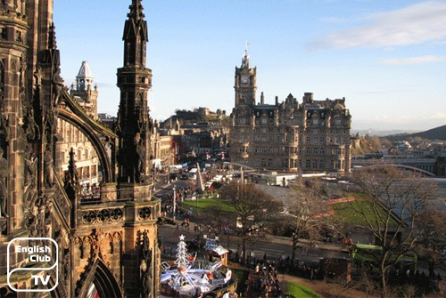
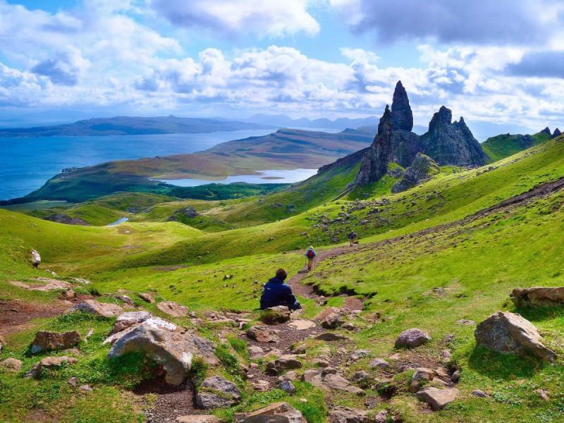
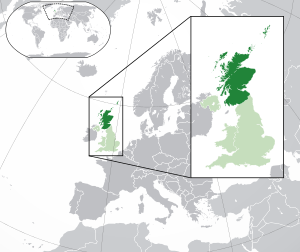
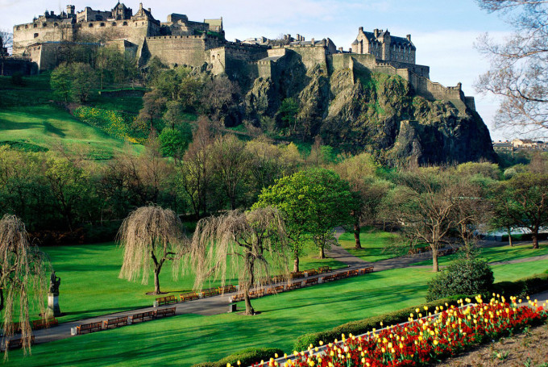

Слово Шотландия происходит от латинского слова Scoti, обозначавшее гэлов. На поздней латыни под словом Scotia («Земля гэлов») понималась Ирландия. К XI веку под этим словом понимали часть Шотландии, находившуюся к северу от реки Форт. Современную территорию страны начали называть Scotland, а людей, проживающих на её территории, — Scots в Позднем Средневековье.

Учёные полагают, что первые люди появились в Шотландии приблизительно 13 тыс. лет назад по мере окончания Последней ледниковой эпохи[21]. Первые здания появились приблизительно 9500 лет назад, а постоянные поселения — 6000 лет назад. К ним относится одно из хорошо сохранившихся поселений эпохи неолита — Скара-Брей, находящееся на Оркнейских островах. Другие памятники эпохи встречаются на Внешних Гебридских и Шетландских островах, это объясняется небольшим количеством растительности, что вынуждало и необходимостью древних жителей строить свои дома из камня.
Письменная история Шотландии начинается с римского завоевания Британии, когда были завоёваны, получили статус римских провинций и стали именоваться Британией территории современной Англии и Уэльса. Часть южной Шотландии была на недолгое время взята под непрямой контроль Рима. К северу лежали земли, свободные от римского завоевания, — Каледония, населённая пиктскими и гэльскими племенами. Согласно римскому историку Тациту, каледонцы начали «полномасштабное вооружённое сопротивление», нападая на римские легионы. Во время одного из ночных рейдов был разгромлен IX Испанский легион, спасённый от полного уничтожения кавалерийской атакой Гнея Юлия Агриколы.В 83—84 годах н. э. Агрикола разбил каледонцев в Битве у Граупийских гор. Согласно Тациту, перед битвой вождь каледонцев Калгак обратился к своим воинам с речью, в которой назвал их «людьми, не знающими оков рабства». После победы римляне построили цепь фортов Гаск-Ридж, однако через три года отошли на Южно-Шотландскую возвышенность.Чтобы защитить территорию Британии, в 122—126 годы римляне построили Вал Адриана, который стал северной границей Империи. Позже, в 144—146 годах ещё севернее, на Среднешотландской низменности был построен Вал Антонина, который был оставлен в 208 году по приказу императора Септимия Севера.Хотя значительная часть Шотландии находилась под римским контролем всего около 40 лет, это оказало серьёзное влияние на южную часть страны, населённую вотадинами и дамнониями. Валлийское название Yr Hen Ogledd (букв. — «Древний Север») использовалось для наименования королевств, образовавшихся на территории Северной Англии и Южной Шотландии после ухода римлян. Согласно записям IX и X веков, приблизительно в IX веке на территории Западной Шотландии было основано гэльское королевство Дал Риада.
В 1502 году король Шотландии Яков IV и король Англии Генрих VII подписали Договор о вечном мире, а Яков IV женился на Маргарите Тюдор. Этот брак позволил Генриху укрепить легитимность своей династии[38]. Однако десять лет спустя Яков решил нарушить Вечный мир и при поддержке Франции объявил войну Англии. 9 сентября 1513 года Яков погибает в битве при Флоддене, становясь последним шотландским монархом, погибшим в бою[39]. 6 июля 1560 года был подписан Эдинбургский договор, закончивший практически трёхсотлетнее противостояние Англии и Шотландии. В том же году под влиянием Джона Нокса шотландский парламент провозгласил запрещение католицизма и принятие протестантства как государственной религии Шотландии[40].В 1603 году король Шотландии Яков VI унаследовал английский престол и стал королём Англии Яковом I[41]. За исключением периода существования Содружества, Шотландия оставалась отдельным государством, но вместе с тем имели место значительные конфликты между монархом и шотландскими пресвитерианами по поводу формы церковного управления. После Славной революции и свержения католика Якова VII Вильгельмом III и Марией II, Шотландия в течение короткого времени угрожала избрать собственного монарха-протестанта, но, под угрозой разрыва Англией торговых и транспортных связей, шотландский парламент совместно с английским подписал союзный договор, ратифицированный к 1707-ому году в обеих странах принятием соответствующих «Актов об унии». В результате политического объединения было образовано королевство Великобритания[11].

18 сентября 2014 года прошёл референдум о независимости Шотландии. За независимость высказалось 44,7 % проголосовавших, против — 55,3 %. Явка составила 84,59 %. После общебританского референдума о выходе из членства в Европейском союзе 23 июня 2016 года, в котором население Шотландии проголосовало 62 % — «против» и 38 % — «за» выход из ЕС, политики и аналитики всех уровней отмечали, что проведение нового референдума о независимости является «высоко вероятным», а уже в начале 2017 года правительство Шотландии начало подготовку необходимой законодательной базы для проведения нового референдума о независимости в целях сохранения Шотландией членства в Евросоюзе.
Территория Шотландии включает в себя северную треть острова Великобритания и прилегающие острова — Гебридские, Оркнейские и Шетлендские. Площадь Шотландии — 78 772 км², протяжённость береговой линии — 9 911 км. На юге граничит с Англией. Протяжённость границы от залива Солуэй-Ферт на западе до реки Туид на востоке — около 96 км. В 30 км к юго-западу от побережья расположен остров Ирландия, в 400 км к северо-востоку — Норвегия, к северу от Шотландии лежат Фарерские острова и Исландия.Западный берег Шотландии омывает Атлантический океан, восточный — Северное море. Западное и восточное морские побережья Шотландии соединены Каледонским каналом, частью которого является известное озеро Лох-Несс. Несмотря на весьма значительную площадь и большое количество нетронутых человеком мест, в Шотландии всего два национальных парка: Лох-Ломонд и Троссахс (площадь 1865 км², образован в 2002 году) и Кернгормс (площадь 4528 км², образован в 2003 году).

Климат умеренный океанический. Благодаря тёплому атлантическому течению Гольфстрим температуры в Шотландии выше, чем в странах, пролегающих на той же параллели (чем, например, в Норвегии), но ниже, чем в других регионах Великобритании. Из-за неравномерного рельефа поверхности погода отличается крайней неустойчивостью. В самые холодные месяцы года — январь и февраль — средний температурный максимум составляет 5—7 °C. В самые тёплые месяцы — июле и августе — 19 °C. Среднегодовое количество осадков колеблется от 3000 мм на севере до 800 мм на юге. Для региона характерен юго-западный ветер, частые штормы на побережье и островах.
Животный мир Шотландии является типичным для северо-западной части Палеарктической экозоны, с некоторыми исключениями. В умеренном климате Шотландии в настоящее время встречаются 62 вида диких млекопитающих (в том числе: популяция диких лесных кошек, значительное количество длинномордых тюленей и тюленей обыкновенных, а также — самая северная колония дельфинов-афалин), около 250 видов птиц (таких, как тетерев-косач и белая (шотландская) куропатка, северная олуша, беркут, шотландский клёст, орланы и скопы).Моря Шотландии являются наиболее биологически продуктивными в мире, по имеющимся оценкам общее число морских видов в них достигает 40 тыс.[68] Холмы Дарвин (англ.)рус. — одна из важных зон глубоководных холодноводных коралловых рифов — была открыта в 1998 году.В водах шотландских рек насчитывается около 400 генетически отличных популяций атлантического лосося[69]. В пресных водах отмечается 42 вида рыб, из которых половина появилась в результате естественной колонизации, другая половина — в результате интродуцирования человеком.Четыре вида рептилий и шесть видов амфибий являются коренными для Шотландии.Кроме того, насчитывается 14 тыс. видов беспозвоночных (в том числе редких видов пчёл и бабочек), так или иначе подпадающих под действие актов по защите окружающей среды.Агентства по охране окружающей среды (англ.)рус. обеспокоены также той угрозой для большей части фауны Шотландии, которая возникает из-за изменений климата[70].
